Field processes
Besides simulation, some field processes have efficient expectedvalue implementation, which coincides with the theoretical mean when the process iscontinuous and isanalytical.
GeoStatsProcesses.iscontinuous — Function
iscontinuous(process::FieldProcess)Tells whether or not the field process is continuous.
GeoStatsProcesses.isanalytical — Function
isanalytical(process::FieldProcess)Tells whether or not the field process is analytical, i.e., has closed-form expressions for conditional mean, etc.
GeoStatsProcesses.expectedvalue — Function
expectedvalue(process::FieldProcess, domain::Domain;
data=nothing, init=NearestInit(), kwargs...)Compute the expected value of the field process over the given domain, conditioned on the data values if provided.
By default, the data is assigned to the nearest geometry of the domain, but other initialization methods are available. Additional kwargs are forwarded to specialized implementations.
Statistics.mean — Method
mean(process::FieldProcess, domain::Domain;
data=nothing, init=NearestInit(), kwargs...)Compute the mean of the continuous field process over the given domain, conditioned on the data values if provided.
By default, the data is assigned to the nearest geometry of the domain, but other initialization methods are available. Additional kwargs are forwarded to specialized implementations.
Builtin
The following field processes are available upon loading GeoStats.jl.
GeoStatsProcesses.GaussianProcess — Type
GaussianProcess(func, mean=0)Gaussian process with given geostatistical function (e.g. variogram) and mean.
Examples
# univariate processes
GaussianProcess(GaussianVariogram())
GaussianProcess(SphericalCovariance(), 0.5)
# multivariate processes
GaussianProcess(LinearTransiogram(), [0.5, 0.5])# domain of interest
grid = CartesianGrid(100, 100)
# Gaussian process
proc = GaussianProcess(GaussianVariogram(range=30.0))
# unconditional simulation
real = rand(proc, grid, 2)
fig = Mke.Figure(size = (800, 400))
viz(fig[1,1], real[1].geometry, color = real[1].field)
viz(fig[1,2], real[2].geometry, color = real[2].field)
fig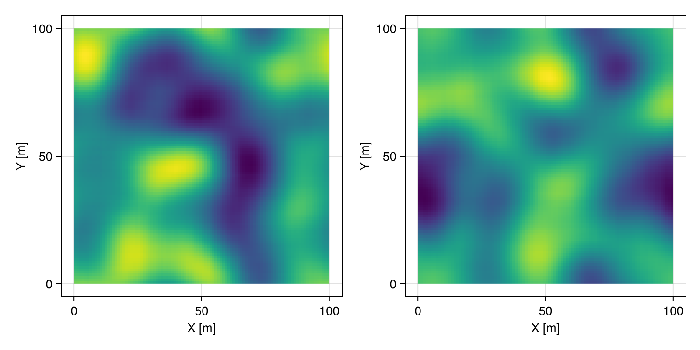
The GaussianProcess can be simulated with different methods. Heuristics are used to select the most appropriate method for the data and domain at hand.
GeoStatsProcesses.LUSIM — Type
LUSIM()The LU simulation method introduced by Alabert 1987 and Davis 1987.
The full covariance matrix is built to include all locations of the data, and samples from the multivariate Gaussian are drawn via a lower-upper (LU) matrix factorization.
References
Alabert 1987. [The practice of fast conditional simulations through the LU decomposition of the covariance matrix] (https://link.springer.com/article/10.1007/BF00897191)
Davis 1987. [Production of conditional simulations via the LU triangular decomposition of the covariance matrix] (https://link.springer.com/article/10.1007/BF00898189)
Oliver 2003. [Gaussian cosimulation: modeling of the cross-covariance] (https://link.springer.com/article/10.1023%2FB%3AMATG.0000002984.56637.ef)
Notes
The method is only adequate for domains with relatively small number of elements (e.g. 100x100 grids) where it is feasible to factorize the full covariance.
For larger domains (e.g. 3D grids), other methods are preferred such as SEQSIM and FFTSIM.
GeoStatsProcesses.FFTSIM — Type
FFTSIM(; [options])The FFT simulation method introduced by Oliver 1995 and Ravalec 2000.
The covariance function is perturbed in the frequency domain after a fast Fourier transform. White noise is added to the phase of the spectrum, and a realization is produced by an inverse Fourier transform.
Data conditioning is currently performed with Kriging, which accepts the following neighbor search options.
Options
minneighbors- Minimum number of neighbors (default to1)maxneighbors- Maximum number of neighbors (default to26)neighborhood- Search neighborhood (default tonothing)distance- Distance used to find nearest neighbors (default toEuclidean())
References
Oliver 1995. [Moving averages for Gaussian simulation in two and three dimensions] (https://link.springer.com/article/10.1007/BF02091660)
Ravalec et al. 2000. [The FFT Moving Average (FFT-MA) Generator: An Efficient Numerical Method for Generating and Conditioning Gaussian Simulations] (https://link.springer.com/article/10.1023/A:1007542406333)
Figueiredo et al. 2019. [Revisited Formulation and Applications of FFT Moving Average] (https://link.springer.com/article/10.1007/s11004-019-09826-4)
Notes
The method is limited to simulations on regular grids, and care must be taken to make sure that the correlation length is small enough compared to the grid size. As a general rule of thumb, avoid correlation lengths greater than 1/3 of the grid.
Visual artifacts can appear near the boundaries of the grid if the correlation length is large compared to the grid itself.
GeoStatsProcesses.SEQSIM — Type
SEQSIM(; [options])The sequential simulation method introduced by Gomez-Hernandez 1993.
The method traverses all elements (i.e. geometries) of the simulation domain according to a path, approximates the conditional distribution with a set of neighbors using a geostatistical model, and assigns a value to the current element by sampling from the conditional distribution.
Options
path- Simulation path (default toLinearPath())minneighbors- Minimum number of neighbors (default to1)maxneighbors- Maximum number of neighbors (default to26)neighborhood- Search neighborhood (default to:range)distance- Distance for nearest neighbors (default toEuclidean())
The conditional distribution is approximated based on a number n of neighbors such that minneighbors ≤ n ≤ maxneighbors.
The neighborhood can be a MetricBall, the symbol :range or nothing. The symbol :range is converted to MetricBall(range(f)) where f is the geostatistical function of the geostatistical process. If neighborhood is nothing, find the nearest neighbors according to the given distance.
References
- Gomez-Hernandez & Journel 1993. Joint Sequential Simulation of MultiGaussian Fields
Notes
This method is very sensitive to neighbor search options and simulation path. Care must be taken to make sure that enough neighbors are used in the underlying geostatistical model.
GeoStatsProcesses.IndicatorProcess — Type
IndicatorProcess(func, prob)Indicator process with multivariate geostatistical function (e.g., multivariate covariance) and a priori probabilities.
IndicatorProcess(transiogram, prob=proportions(transiogram))Alternatively, construct indicator process from transiogram.
Examples
# covariance and explicit probabilities
IndicatorProcess([1.0 0.5; 0.5 1.0] * SphericalCovariance(), [0.8, 0.2])
# transiogram and implicit probabilities
IndicatorProcess(LinearTransiogram())
# transiogram and explicit probabilities
IndicatorProcess(ExponentialTransiogram(), [0.8, 0.2])# domain of interest
grid = CartesianGrid(100, 100)
# multivariate function modeling categorical values
func = SphericalTransiogram(ranges=(50.0, 10.), proportions=(0.5, 0.3, 0.2))
# indicator process
proc = IndicatorProcess(func)
# unconditional simulation
real = rand(proc, grid, 2)
fig = Mke.Figure(size = (800, 400))
viz(fig[1,1], real[1].geometry, color = real[1].field)
viz(fig[1,2], real[2].geometry, color = real[2].field)
fig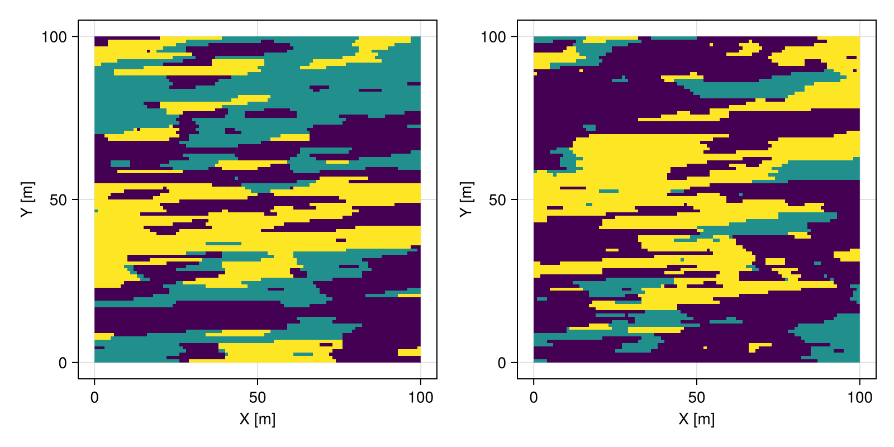
# data with categorical column
table = (; facies=["shale", "sand", "clay"])
coord = [(25.0, 25.0), (50.0, 75.0), (75.0, 25.0)]
data = georef(table, coord)
# conditional simulation
real = rand(proc, grid, data=data)
# visualize realization
real |> viewer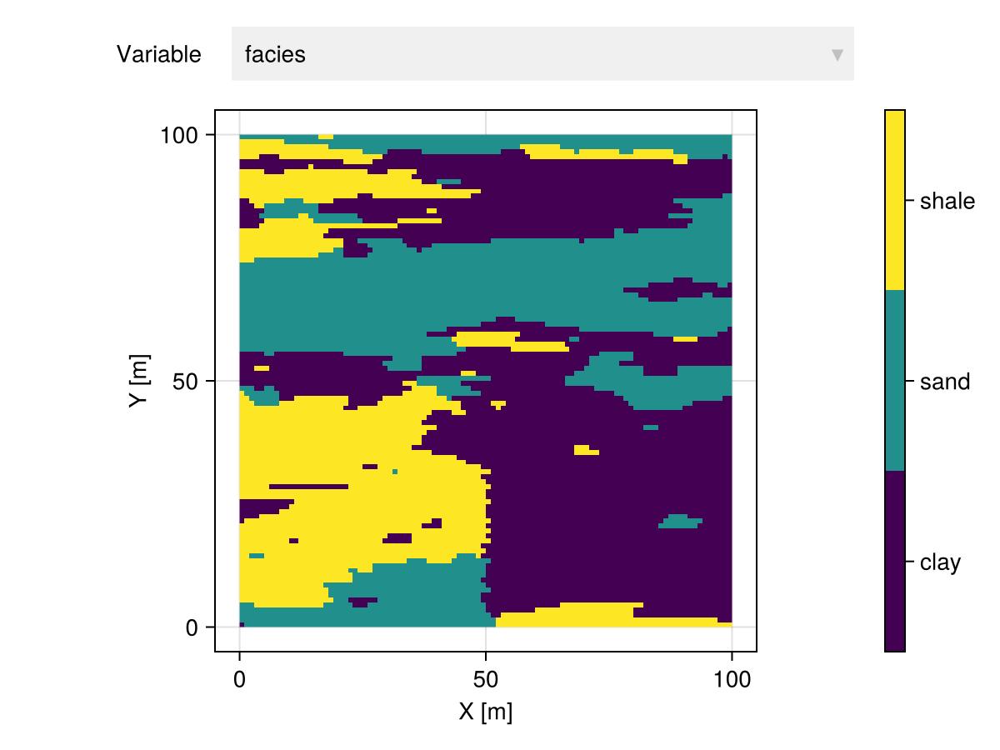
GeoStatsProcesses.LindgrenProcess — Type
LindgrenProcess(range=1.0, sill=1.0)Lindgren process with given range and sill.
The process relies on the discretization of the Laplace-Beltrami operator on meshes and is associated with a specific SPDE.
Examples
# set range
LindgrenProcess(20.0)
# set range and sill
LindgrenProcess(20.0, 2.0)References
- Lindgren et al. 2011. An explicit link between Gaussian fields and Gaussian Markov random fields: the stochastic partial differential equation approach
Notes
The process is particularly useful in highly curved domains (e.g. surfaces) given that it approximates geodesics as opposed to naive Euclidean distances.
It is also known as Gaussian Markov Random Field (GMRF) in the literature.
# domain of interest
mesh = simplexify(Sphere((0, 0, 0), 1))
# Lindgren process
proc = LindgrenProcess(0.1)
# unconditional simulation
real = rand(proc, mesh, 2)
fig = Mke.Figure(size = (800, 400))
viz(fig[1,1], real[1].geometry, color = real[1].field)
viz(fig[1,2], real[2].geometry, color = real[2].field)
fig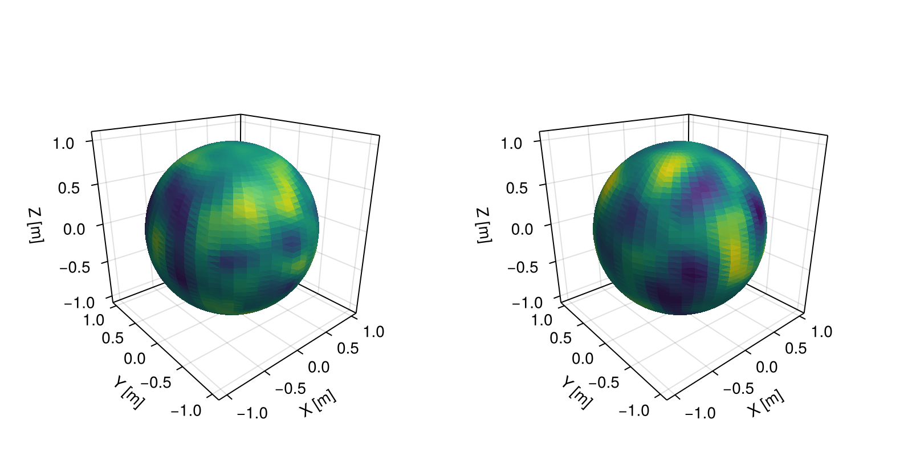
External
The following field processes are available upon loading external packages.
ImageQuilting.jl
GeoStatsProcesses.QuiltingProcess — Type
QuiltingProcess(trainimg, tilesize; [options])Image quilting process with training image trainimg and tile size tilesize as described in Hoffimann et al. 2017.
Options
overlap- Overlap size (default to (1/6, 1/6, ..., 1/6))path- Process path (:raster(default),:dilation, or:random)soft- A pair(data,dataTI)of geospatial data objects (default tonothing)tol- Initial relaxation tolerance in (0,1] (default to0.1)
References
Hoffimann et al 2017. Stochastic simulation by image quilting of process-based geological models
Hoffimann et al 2015. Geostatistical modeling of evolving landscapes by means of image quilting
using ImageQuilting
using GeoStatsImages
# domain of interest
grid = CartesianGrid(200, 200)
# quilting process
img = geostatsimage("Strebelle")
proc = QuiltingProcess(img, (62, 62))
# unconditional simulation
real = rand(proc, grid, 2)
fig = Mke.Figure(size = (800, 400))
viz(fig[1,1], real[1].geometry, color = real[1].facies)
viz(fig[1,2], real[2].geometry, color = real[2].facies)
fig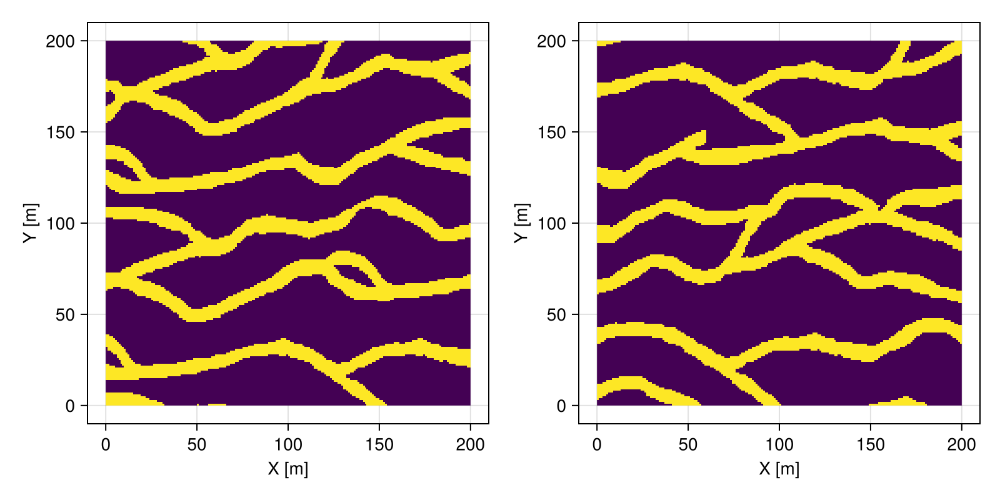
# domain of interest
grid = CartesianGrid(200, 200)
# quilting process
img = geostatsimage("StoneWall")
proc = QuiltingProcess(img, (13, 13))
# unconditional simulation
real = rand(proc, grid, 2)
fig = Mke.Figure(size = (800, 400))
viz(fig[1,1], real[1].geometry, color = real[1].Z)
viz(fig[1,2], real[2].geometry, color = real[2].Z)
fig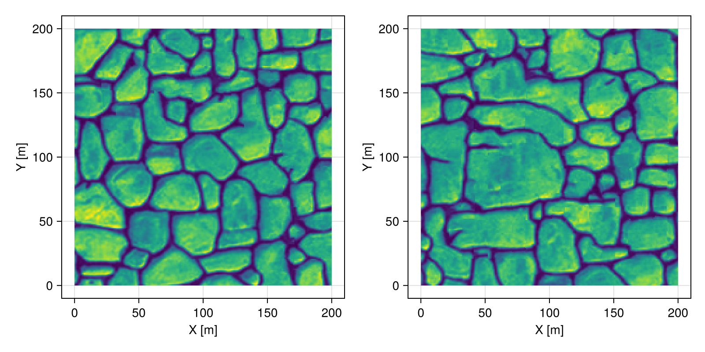
# domain of interest
grid = domain(img)
# pre-existing observations
img = geostatsimage("Strebelle")
data = img |> Sample(20, replace=false)
# quilting process
proc = QuiltingProcess(img, (30, 30))
# conditional simulation
real = rand(proc, grid, 2, data=data)
fig = Mke.Figure(size = (800, 400))
viz(fig[1,1], real[1].geometry, color = real[1].facies)
viz(fig[1,2], real[2].geometry, color = real[2].facies)
fig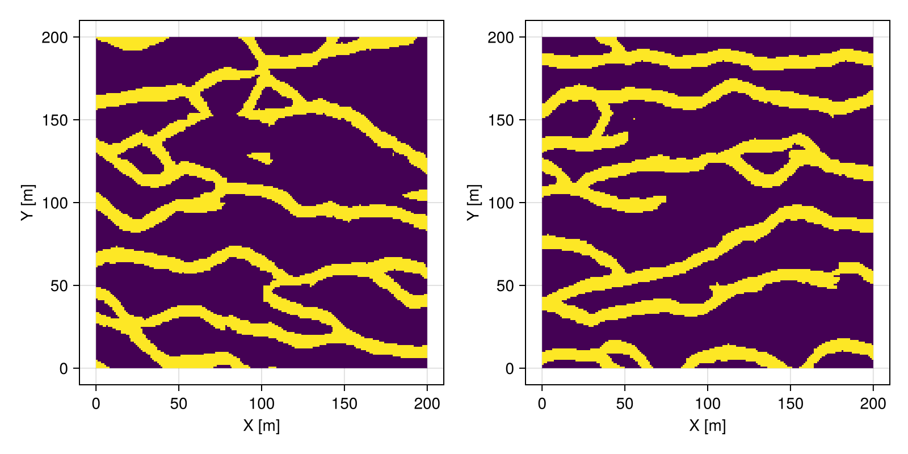
The QuiltingProcess can be simulated over views of grids, as in the example below where we simulate patterns inside a ball:
# domain of training image
grid = domain(img)
# view pixels inside ball
ball = Ball((50.0, 50.0), 25.0)
vgrid = view(grid, ball)
# quilting process
proc = QuiltingProcess(img, (62, 62))
# unconditional simulation
real = rand(proc, vgrid, 2)
fig = Mke.Figure(size = (800, 400))
viz(fig[1,1], real[1].geometry, color = real[1].facies)
viz(fig[1,2], real[2].geometry, color = real[2].facies)
fig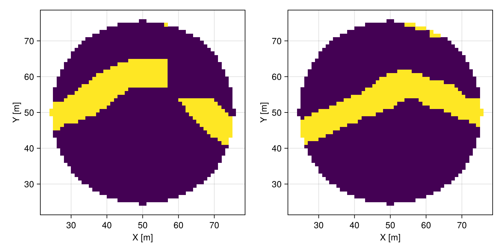
It is possible to incorporate auxiliary variables to guide the selection of patterns from the training image.
using ImageFiltering
# image assumed as ground truth (unknown)
truth = geostatsimage("WalkerLakeTruth")
# training image with similar patterns
img = geostatsimage("WalkerLake")
# forward model (blur filter)
function forward(data)
img = reshape(data.Z, size(domain(data)))
krn = KernelFactors.IIRGaussian([10,10])
fwd = imfilter(img, krn)
georef((; fwd=vec(fwd)), domain(data))
end
# apply forward model to both images
data = forward(truth)
dataTI = forward(img)
proc = QuiltingProcess(img, (27, 27), soft=(data, dataTI))
real = rand(proc, domain(truth), 2)
fig = Mke.Figure(size = (800, 400))
viz(fig[1,1], real[1].geometry, color = real[1].Z)
viz(fig[1,2], real[2].geometry, color = real[2].Z)
fig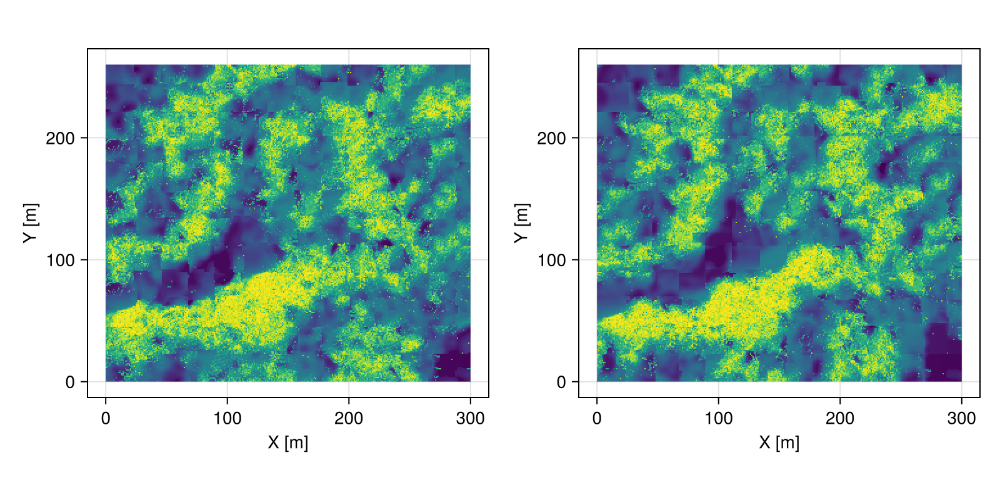
TuringPatterns.jl
GeoStatsProcesses.TuringProcess — Type
TuringProcess(; [options])Turing process as described in Turing 1952.
Options
params- basic parameters (default tonothing)blur- blur algorithm (default tonothing)edge- edge condition (default tonothing)iter- number of iterations (default to100)
References
- Turing 1952. The chemical basis of morphogenesis
using TuringPatterns
# domain of interest
grid = CartesianGrid(200, 200)
# unconditional simulation
real = rand(TuringProcess(), grid, 2)
fig = Mke.Figure(size = (800, 400))
viz(fig[1,1], real[1].geometry, color = real[1].field)
viz(fig[1,2], real[2].geometry, color = real[2].field)
fig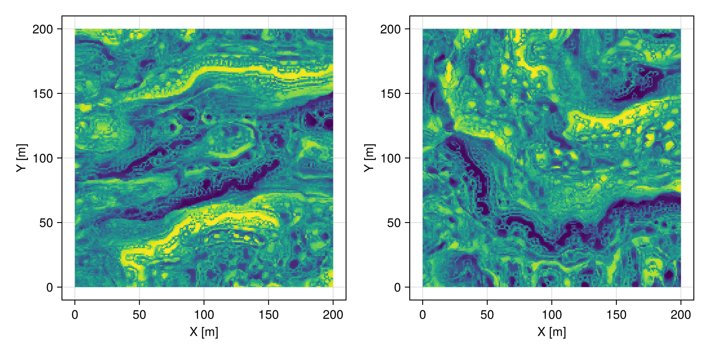
StratiGraphics.jl
GeoStatsProcesses.StrataProcess — Type
StrataProcess(environment; [options])Strata process with given geological environment as described in Hoffimann 2018.
Options
state- Initial geological statestack- Stacking scheme (:erosional or :depositional)nepochs- Number of epochs (default to 10)
References
using StratiGraphics
# domain of interest
grid = CartesianGrid(50, 50, 20)
# stratigraphic environment
p = SmoothingProcess()
T = [0.5 0.5; 0.5 0.5]
Δ = ExponentialDuration(1.0)
ℰ = Environment([p, p], T, Δ)
# strata simulation
real = rand(StrataProcess(ℰ), grid, 2)
fig = Mke.Figure(size = (800, 400))
viz(fig[1,1], real[1].geometry, color = real[1].field)
viz(fig[1,2], real[2].geometry, color = real[2].field)
fig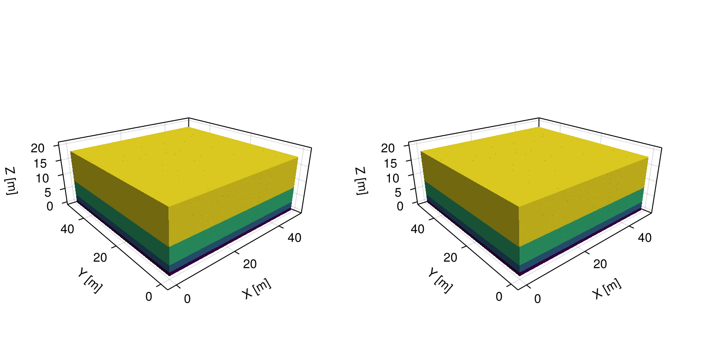